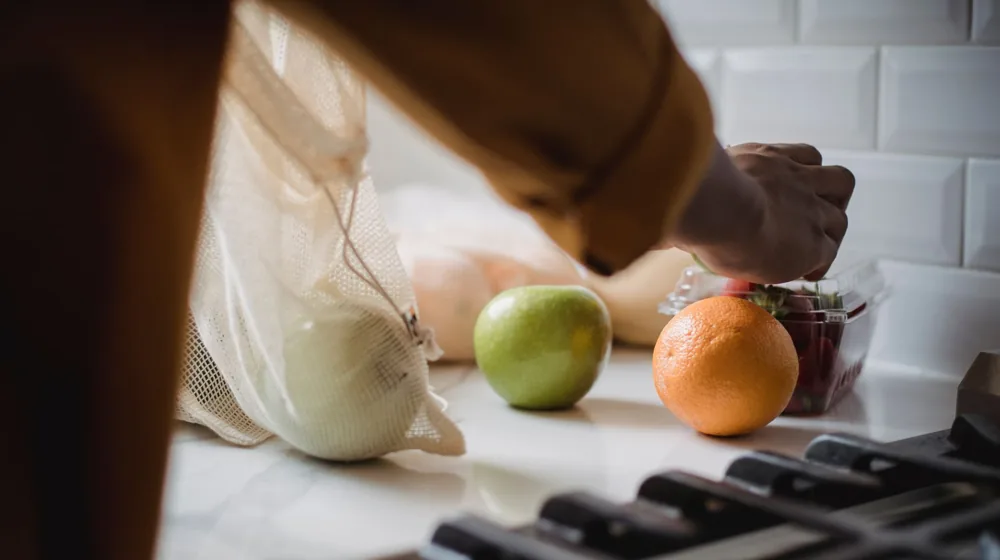

음식 버리기 전 필수 확인! 유통기한·소비기한 차이와 실제 보관법
사진: cottonbro studio / Pexels (무료 이미지, 출처 표기)
음식 버리기 전 필수 확인! 유통기한·소비기한 차이와 실제 보관법

냉장고 속 음식을 볼 때마다 '이거 아직 먹어도 되나?' 고민한 적 있으신가요? 특히 유통기한이 지났거나, 소비기한이라는 새로운 용어 때문에 혼란스러울 때가 많습니다. 이제는 불필요하게 음식을 버리는 일이 없도록 유통기한과 소비기한의 명확한 차이점을 알고, 안전하게 식품을 관리하는 방법을 알아보겠습니다. 이 글을 통해 음식물 쓰레기를 줄이고 식비까지 절약하는 지혜를 얻으실 수 있습니다.
유통기한과 소비기한, 정확히 뭐가 다를까?
식품에 표시된 날짜는 단순히 '버려야 하는 날'을 의미하지 않습니다. 유통기한(Expiration Date)과 소비기한(Use-by Date)은 식품 안전에 대한 정보를 제공하지만, 그 의미는 크게 다릅니다. 이 둘의 차이를 이해하는 것이 안전한 식품 섭취의 첫걸음입니다.
유통기한은 제품이 시중에 판매될 수 있는 기간을 뜻하며, 이 기한이 지나도 식품이 바로 상하는 것은 아닙니다. 반면 소비기한은 적절한 보관 조건이 유지되었다면 식품을 먹어도 안전하다고 판단되는 기간을 의미합니다. 소비기한은 식품의약품안전처의 과학적인 검증을 거쳐 설정됩니다.
소비기한 도입 배경: 왜 바뀌었을까?
우리나라는 2023년 1월 1일부터 기존 유통기한 대신 소비기한 표시를 전면 시행했습니다. 이 변화는 유엔 국제식품규격위원회(CODEX)가 권고하는 국제적 기준을 따르고, 식품 폐기물을 줄여 환경 보호에 기여하기 위함입니다.
유통기한 표시는 소비자들이 기한이 지나면 무조건 버려야 한다고 오해하여, 아직 섭취 가능한 식품이 음식물 쓰레기로 버려지는 경우가 많았습니다. 식품의약품안전처에 따르면, 소비기한 도입을 통해 연간 1조 원 이상의 경제적 편익과 약 179톤의 온실가스 감축 효과를 기대하고 있습니다.
대표 식품별 소비기한, 얼마나 될까?
소비기한은 제품의 종류와 보관 방법에 따라 크게 달라집니다. 특히 냉장 보관이 중요한 식품들은 개봉 전이라도 적정 온도가 유지되어야 소비기한까지 안전하게 섭취할 수 있습니다. 다음은 몇 가지 대표적인 식품의 소비기한(개봉 전, 적정 보관 조건 기준)입니다.
- 우유: 냉장 보관 시 유통기한 후 45일
- 두부: 냉장 보관 시 유통기한 후 90일
- 빵: 실온 보관 시 유통기한 후 10일
- 요거트: 냉장 보관 시 유통기한 후 10일
- 냉동만두: 냉동 보관 시 유통기한 후 1년
- 라면: 실온 보관 시 유통기한 후 8개월
위에 제시된 기간은 일반적인 예시이며, 제품별 제조 공정이나 첨가물, 포장 상태에 따라 실제 소비기한은 다를 수 있습니다. 정확한 소비기한은 반드시 제품 포장에 표시된 날짜를 확인하는 것이 중요합니다. 2024년 8월 기준으로 위와 같은 기간이 제시되나, 정확한 사항은 공식 홈페이지나 해당 기관에서 다시 확인하시길 권장합니다.
소비기한 지나도 먹어도 되는 음식, 확인하는 방법
소비기한이 지났다고 해서 모든 음식을 즉시 버려야 하는 것은 아닙니다. 하지만 이때는 식품의 상태를 꼼꼼히 확인하는 것이 필수적입니다.
- 외관 확인: 색깔이 변했는지, 곰팡이가 피었는지, 이물질이 보이는지 육안으로 확인합니다.
- 냄새 확인: 시큼하거나 역겨운 냄새 등 불쾌한 냄새가 나는지 확인합니다.
- 질감 확인: 끈적임이나 물러짐, 딱딱하게 굳는 등 비정상적인 질감 변화가 있는지 살펴봅니다.
만약 이러한 변화가 감지된다면, 아무리 아깝더라도 섭취하지 않는 것이 안전합니다. 특히 육류, 어패류, 유제품 등은 변질 위험이 크므로 더욱 주의해야 합니다. 의심스럽다면 섭취를 피하고 폐기하는 것이 현명합니다.
음식물 안전 보관을 위한 필수 체크리스트
소비기한까지 식품을 안전하게 보관하기 위해서는 올바른 보관 습관이 중요합니다. 다음 체크리스트를 통해 식품 보관 상태를 점검해보세요.
- 적정 온도 유지: 냉장/냉동 식품은 반드시 권장 온도(냉장 0~5℃, 냉동 -18℃ 이하)를 지켜 보관합니다.
- 밀폐 용기 사용: 개봉한 식품은 공기와의 접촉을 최소화하기 위해 밀폐 용기나 지퍼백에 넣어 보관합니다.
- 교차 오염 방지: 날것과 조리된 식품을 분리 보관하고, 용기나 도마를 따로 사용하는 것이 좋습니다.
- 선입선출: 오래된 식품을 먼저 섭취하고, 새로 구매한 식품은 뒤쪽에 보관하는 습관을 들입니다.
- 정기적인 냉장고 청소: 냉장고 내부를 깨끗하게 유지하고, 유통기한/소비기한이 지난 식품은 주기적으로 정리합니다.
이러한 보관 습관은 식품의 신선도를 유지하고 잠재적인 위험을 줄이는 데 큰 도움이 됩니다. 사소해 보이지만 꾸준히 실천하면 음식물 쓰레기를 효과적으로 줄일 수 있습니다.
자주 묻는 질문
소비기한과 관련하여 소비자들이 자주 궁금해하는 질문들을 모아봤습니다.
Q. 소비기한이 지나면 무조건 버려야 하나요?
A. 아닙니다. 소비기한은 식품이 '안전하게 섭취 가능한 최종 기한'을 의미하며, 해당 기한 내에 적절하게 보관되었다면 안전하다고 볼 수 있습니다. 하지만 소비기한이 지난 식품은 섭취 전 반드시 외관, 냄새, 질감 등을 꼼꼼히 확인하고 이상 징후가 있다면 섭취하지 않는 것이 좋습니다.
Q. 개봉 후 보관 기간은 어떻게 되나요?
A. 식품을 개봉한 순간부터 외부 공기와 접촉하며 변질 속도가 빨라집니다. 따라서 개봉 후에는 소비기한과 상관없이 가급적 빨리 섭취해야 합니다. 제품 포장에 '개봉 후 O일 이내 섭취'와 같은 문구가 있다면 이를 따르는 것이 가장 안전합니다.
Q. 냉장고 문을 자주 열면 소비기한에 영향을 주나요?
A. 네, 영향을 줄 수 있습니다. 냉장고 문을 자주 여닫거나 내용물을 너무 가득 채우면 내부 온도가 불안정해져 식품의 변질을 앞당길 수 있습니다. 냉장고의 적정 온도를 유지하고, 필요한 물건만 신속하게 꺼내는 습관을 들이는 것이 좋습니다.
이제 유통기한과 소비기한의 차이를 명확히 이해하고, 식품을 더욱 현명하게 관리할 수 있게 되셨기를 바랍니다. 올바른 지식과 습관으로 불필요한 음식물 낭비를 줄이고 건강한 식생활을 유지해나가세요.
🔗 이 글도 함께 보면 좋아요: 이진숙 전 MBC 기자, 그녀의 경력과 평가: 논란 속에서 핵심을 짚는 가이드
관련 추천 상품
음식물 쓰레기통, 밀폐용기, 진공포장기 관련 인기 상품 보러가기
이 포스팅은 쿠팡 파트너스 활동의 일환으로, 이에 따른 일정액의 수수료를 제공받습니다.